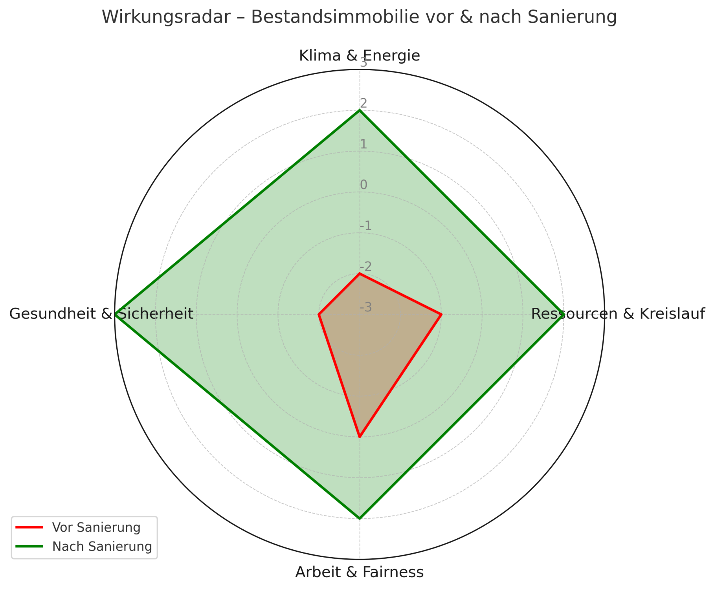
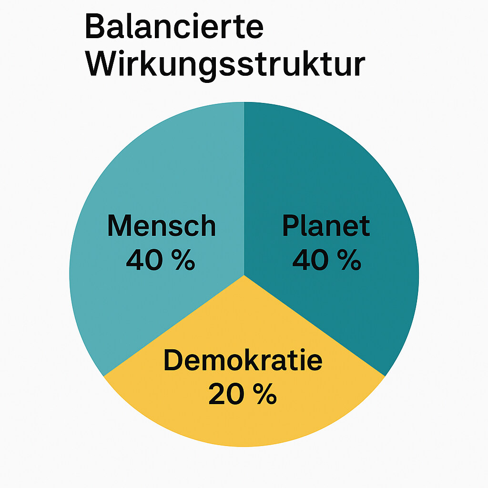

Warum der Wohnungsmarkt scheitert
Die Mietpreise steigen, Sanierungen bleiben aus, und sozialer Wohnraum verschwindet. Wir fördern, regulieren, subventionieren - und doch verschärfen sich die Spannungen zwischen Mieter:innen, Vermieter:innen und Staat jedes Jahr.
Warum? Weil wir den Wohnungsmarkt immer noch nach Kapital steuern - nicht nach Wirkung.
Der Preis spiegelt nicht wider, was eine Wohnung bewirkt, sondern nur, was jemand zahlen kann. So werden Fehlanreize belohnt, während nachhaltige und faire Lösungen sich kaum rechnen.
Die Folge: Spekulation wird profitabel, Verantwortung wird bestraft.
Der Paradigmenwechsel: Wirkung statt Kapital
Die Wirkungsökonomie verändert dieses Prinzip grundlegend. Sie bewertet Märkte nicht nach Kapital, sondern nach messbarer Wirkung auf Mensch, Planet und Demokratie.
Statt Subventionen, Mietendeckeln oder Bürokratie setzt sie auf ein einfaches Prinzip:
Wirkung wird belohnt, Schädigung besteuert.
Jede Wohnung, jedes Bauprojekt, jede Kommune erhält dafür einen Wirkungsscore, der ökologische, soziale und demokratische Faktoren in Echtzeit abbildet.
Das System erkennt:
ob eine Sanierung CO₂ spart oder nur Mieten treibt,
ob Baukosten Arbeit fair entlohnen,
ob Nachbarschaften stabil bleiben oder Verdrängung droht.
Das Ergebnis ist ein ehrlicher Markt, in dem Fairness sich rechnet.
Das Wirkungsradar - die vier Kernfelder

Das Wirkungsradar zeigt, wie jedes Wohnobjekt in vier Feldern abschneidet:
Klima & Energie - Energieeffizienz, Heizsystem, CO₂-Fußabdruck
Ressourcen & Kreislauf - Baustoffe, Recycling, Lebensdauer
Arbeit & Fairness - Löhne, Mieten, Verdrängungsrisiken
Gesundheit & Sicherheit - Raumklima, Barrierefreiheit, Schutzqualität
Das schwächste Feld bestimmt die Steuerklasse (Reverse Merit Order). So wird Greenwashing unmöglich, und echte Balance messbar.
Der Wirkungsindex für Mieten (WIX-Wohn)
Damit Wirkung auch ökonomisch sichtbar wird, berechnet der WIX-Wohn die Gesamtwirkung einer Wohnung auf Basis von Energie, Fairness und sozialer Stabilität.
→ Steuerklasse: 0 % Wirkungssteuer→ Interpretation: faire Mieten, effiziente Sanierung, stabile Nachbarschaft
Wenn Wirkung den Preis bestimmt, wird Gerechtigkeit ökonomisch.
Wohnraum als Vertrauenskapital
Wohnen ist mehr als Infrastruktur - es ist soziales Fundament demokratischer Stabilität. Menschen, die sicher wohnen, verlieren die Angst vor Zukunft. Menschen, die Angst haben, verlieren Vertrauen in Staat und Gesellschaft.
Die Wirkungsökonomie macht dieses Vertrauenskapital messbar:
Wohnstabilität (Mietdauer, Kündigungsrisiko)
Vertrauensindex Quartier (Nachbarschaft, Zugehörigkeit)
Partizipation im Wohnumfeld (Engagement, Mitbestimmung)
Diese Werte fließen in das Feld Arbeit & Fairness und damit in die Gesamtwirkung ein. Wohnsicherheit wird so zu einer Währung des Vertrauens - und damit zu einem Teil demokratischer Resilienz.
„Wer sicher wohnt, kann langfristig denken - und rational wählen.“ — Natalie Weber, Die neue Ordnung des Wohlstands
Kommunale Rückverteilung: Wirkung bleibt lokal
Ein Teil der erhobenen Wirkungssteuer fließt automatisch zurück an die Kommunen - in einen Kommunalen Wirkungsfonds, der Mittel dorthin lenkt, wo sie messbar wirken.
Beispiel: Fall Bonn (fiktiv, WIX-Kom = +1,8)

Wirkung bleibt dort, wo sie entsteht - und macht Kommunen handlungsfähig statt abhängig.
Was sich für Mieter:innen und Vermieter:innen ändert
Vermieter:innen profitieren von niedrigeren Steuersätzen, stabilen Wertsteigerungen und höherer Nachfrage durch faire Mieten.
Mieter:innen profitieren von stabilen Kosten, Bonuspunkten und sozialem Rückfluss über kommunale Fonds.
Kommunen sparen Verwaltung, gewinnen Vertrauen, fördern Wirkung.
Der Markt wird wieder zu dem, was er sein sollte: ein Ort des Gleichgewichts.
Wohnen als Schule der Wirkungsökonomie
Wenn wir am Wohnungsmarkt verstehen, dass Wirkung messbar und steuerbar ist, dann verstehen wir das Prinzip jeder nachhaltigen Wirtschaft:
Balance statt Ausbeutung
Verantwortung statt Kontrolle
Wirkung statt Kapital
Wohnen zeigt, dass Gerechtigkeit kein Ideal, sondern eine Methode sein kann.
Wirkung ist keine Idee. Sie ist die Sprache, in der die Zukunft mit uns spricht. — Natalie Weber, Begründerin der Wirkungsökonomie